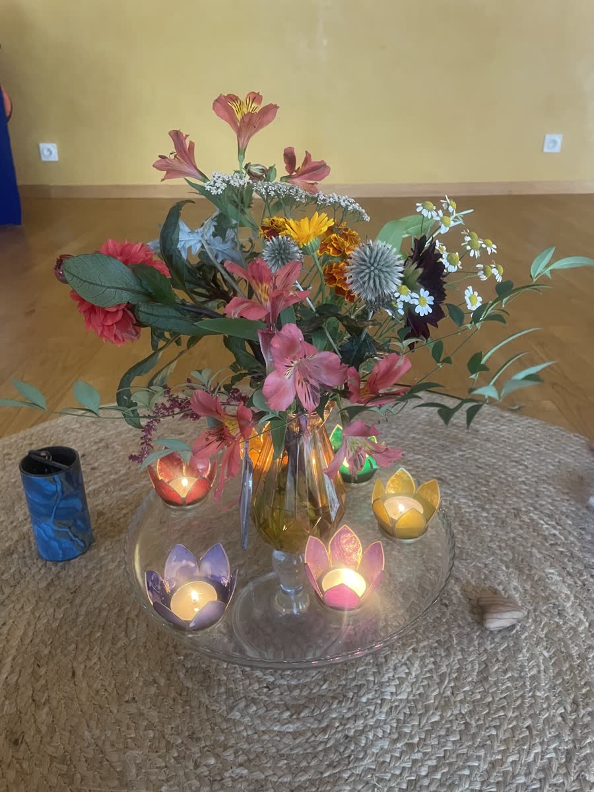

i
Member enquiries
Warm, timely replies so every person who reaches out feels met.
How can I support your organisation?
My admin and events work with the Inayatiyya and its Healing Activity gives a flavour of what I can offer other organisations. I enjoy both sides of it: making sure someone coming for the first time feels welcome, and taking care of the details so the people leading a retreat can focus on their work.
Talk about your organisation
Warm, timely replies so every person who reaches out feels met.
Writing and sending news that carries the spirit of your community.
Bringing events together, from first idea and bookings to the last candle.
Helping someone arriving for the first time to feel at home.
A short description of your role, the kinds of events you've supported, and a few words from someone you've worked with.

Service is where inner life becomes useful action.